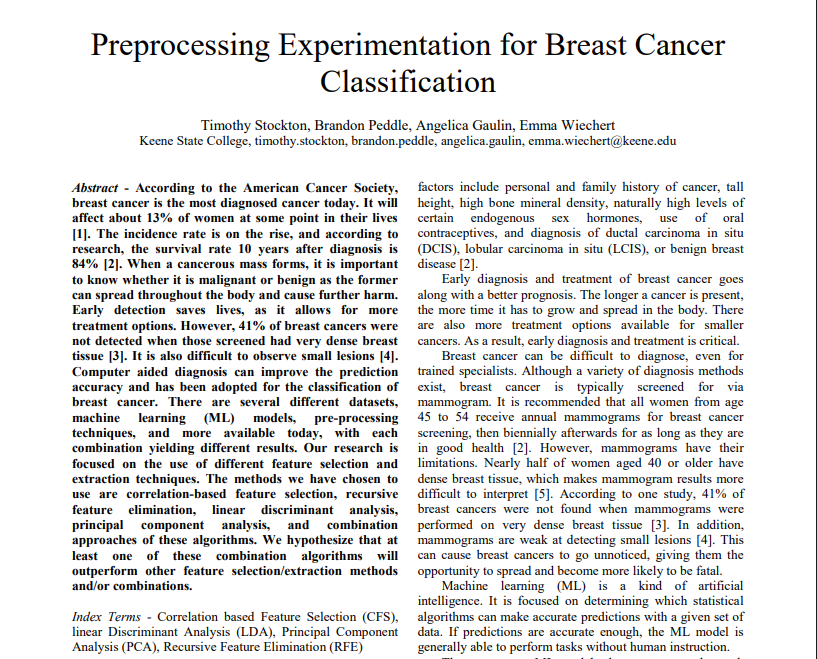
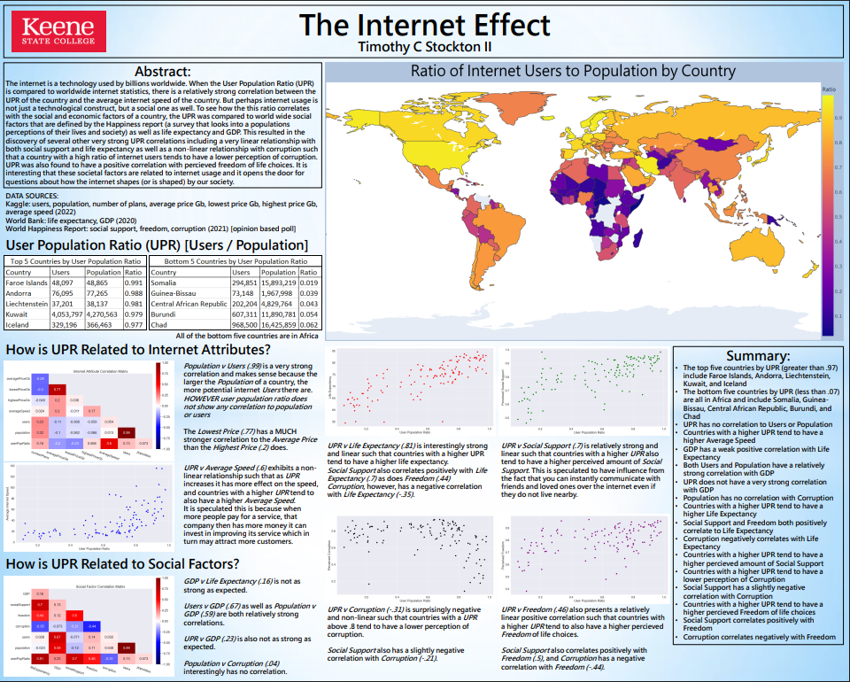
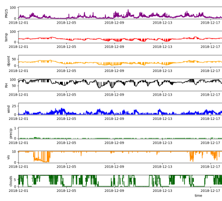
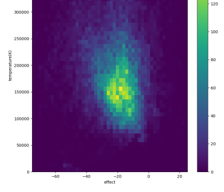
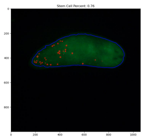

Research (Machine Learning & Data Analysis)
Applied research in machine learning and data analysis, focused on evaluating model performance, preprocessing techniques, and real-world data relationships using Python-based tooling.

Published Research: ML Preprocessing & Model Performance
Co-authored a published research paper analyzing the impact of preprocessing techniques on machine learning model performance using a breast cancer dataset.
- Evaluated feature selection and extraction techniques including CFS, RFE, PCA, and LDA
- Trained and compared multiple models: Logistic Regression, Random Forest, SVM, Neural Networks, and XGBoost
- Built data processing and experimentation workflows using Python (Pandas, NumPy, Scikit-learn)
- Analyzed performance tradeoffs across models and preprocessing strategies
📄 View Paper | 📚 Published via Springer (LNDECT, Vol. 201)
This work reflects my interest in data-driven system design and performance optimization.

Global Internet Usage & Socioeconomic Analysis
Conducted independent data analysis exploring relationships between internet adoption and global socioeconomic indicators.
- Analyzed country-level datasets including GDP, life expectancy, and social metrics
- Identified correlations between internet usage and economic development factors
- Built data pipelines and visualizations using Python (Pandas, Seaborn)
- Presented findings through a structured research poster with supporting visuals
Additional Data Analysis Projects
A collection of smaller analytical studies applying statistical methods and visualization techniques to real-world datasets.
- Particulate Matter Analysis - Environmental data trends and air quality insights
- Solar Wind Analysis - Time-series data exploration of solar activity
- Planaria Study - Biological data analysis and pattern identification


